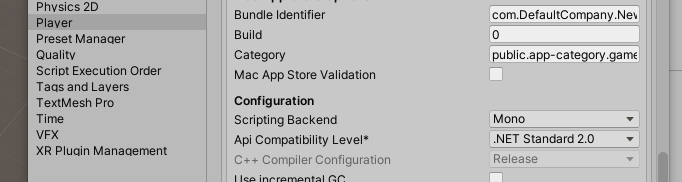
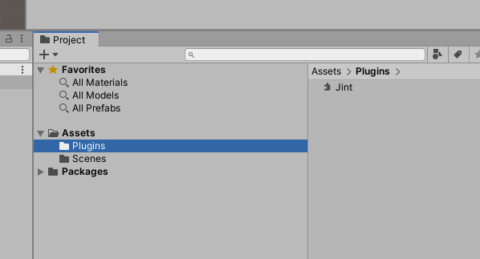
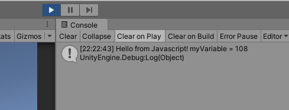
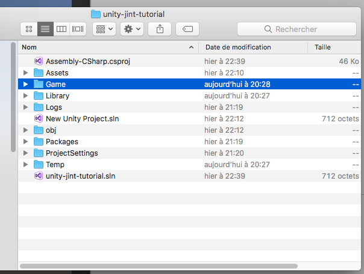
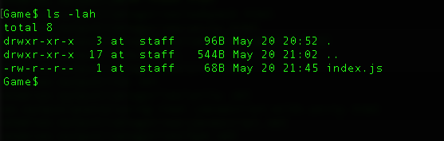
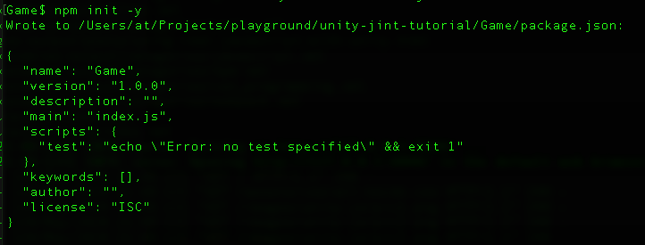
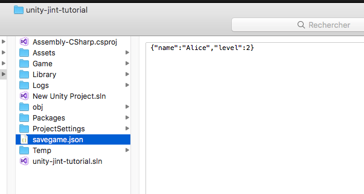
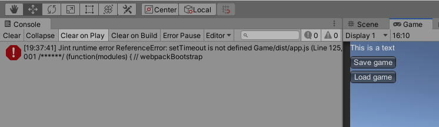
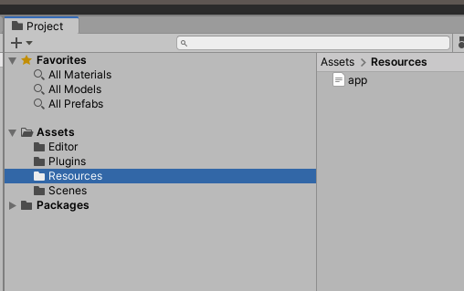

Using real JavaScript with Unity
What
This tutorial will tell you how to use Jint engine to write cross-platform games in a real JavaScript ES6 with Unity. It's not to be confused with UnityScript language, that is .NET js-like syntax, and has little common with JavaScript.
Why
If you make relatively complicated games, like RPG-s, and so on, you probably need a good scripting language, to handle complex game story, NPC-s and object interactions, custscenes, events, and so on. Then, while C# language is good for engine logic, it's not designed for scripting. It's simply has too much verbosity and boilerplate, and too little flexibility for the creative part of the game. You will probably also need a scripting language that is easily understandable by game scripters, and modders, that are not necessary programmers.
Many big projects choose Lua for this purpose. Lua is a great dynamic language, and it has a lot of similarities with JavaScript. You can also make Lua work with Unity. However, here I want to show how to use JavaScript, because it gives the following advantages:
- It has a familiar C-like syntax, as opposite to a bit weird syntax of Lua.
- It has a huge developers community, and npm library with tons of open source packages, including the game development ones, like dialogs, quests, pathfinder, and anything else.
- It has a lot of well established development tools, including IDEs, unit test libraries, linters, etc.
If you decide to use JavaScript in Unity, among many other features, you are able:
- Write logic of your game in a multi-paradigm, dynamically typed language with strong concepts of meta-programming, where you can both create a beautiful architecture, and unleash your creativity when coding the game world without loosing focus on technical stuff.
- Make your game scripts logic abstracted from lower level engine logic, also allowing to write automated tests for your story, dialogs and interactions, without even running Unity engine.
- Easily expose your game logic to the community, so fans can create mods and addons.
- Make your game portable to any other engine than Unity, if needed
- Have access to the npm library with thousands of free javascript libraries and tools.
If you are a professional JavaScript developer, or if you just love JavaScript, but want to make a Unity game, then this tutorial can be especially good for you.
This tutorial will be also useful for non-unity developers, who just want to setup Webpack/Babel with Jint. In this case, jump directly here.
This tutorial will cover
1) Basic setup and usage
- Setting up a simple Unity project with Jint.
- Calling Unity C# code from JavaScript
- Loading the script from file
- Handling exceptions
2) NPM project and ES6 setup
- Setting up Webpack and Babel to have ES6 support in a fully-functional npm-based project
- Non-minimized bundle, modules and global variables
3) Some useful operations with Unity and JS
- Saving and loading the game: a simple way to manage state of your JavaScript logic.
- setTimeout, and Unity coroutines
- Add support of Promises
4) Build and automated tests
Prerequisites
- You have some experience in both JavaScript, C# and Unity
- You have some experience with command line tools and npm
This tutorial will use very simple MonoBehaviour code as example, as its goal is to show how to use Javascript in Unity, not how to create an engine architecture, or a game.
Let's do it
To run JavaScript engine from .NET we will use Jint library. Jint is a Javascript interpreter for .NET which provides full ECMA 5.1 compliance and can run on any .NET platform.
Creating a project and setting up Jint
1) Create a project in Unity
2) Get the Jint.dll from NuGet packages. For this do the following:
- The latest stable version at the moment of writing this is 2.11.58, so download the package from here:
- Rename jint.2.11.58.nupkg to jint.2.11.58.zip and unpack it
- Take the Jint.dll from the folder lib/netstandard2.0 of the package
3) Make sure your projects uses .NET Standard 2.0 in Edit -> Project Settings -> Player This is recommended, as it is smaller gives the compatibility with the all the platforms Unity supports.

NOTE: if you rather want to use .NET 4.x setting, then take the Jint.dll from the corresponding folder from the package in the previous step.
4) Create a folder Plugins in your Assets and drag Jint.dll there.

5) Let's create a C# MonoBehavior called JavascriptRunner.cs on a scene object and call some JavaScript from it:
using UnityEngine;
using Jint;
using System;
public class JavascriptRunner : MonoBehaviour
{
private Engine engine;
// Start is called before the first frame update
void Start()
{
engine = new Engine();
engine.SetValue("log", new Action<object>(msg => Debug.Log(msg)));
engine.Execute(@"
var myVariable = 108;
log('Hello from Javascript! myVariable = '+myVariable);
");
}
}
Here we create new Engine object from Jint and call a very simple Hello World code in JS. Now attach the JavascriptRunner to the MainCamera on the scene and press Play.
You will see the following output in the console:

Note how we make JavaScript call the Unity Debug.Log by proxying the call to log function in JavaScript:
engine.SetValue("log", new Action<object>(msg => Debug.Log(msg)));
This is direct function call, where you can call any C# functions from javascript. There is also other ways to call the C# code, let's see them.
Calling Unity C# code from JavasSript
There are several ways to bind C# objects to JavaScript. As shown above, we can easily bind C# functions to JS. For non-void functions, that need to return value, you can use Func delegate. Change the code as following and press Play:
void Start()
{
engine = new Engine();
engine.SetValue("log", new Action<object>(msg => Debug.Log(msg)));
engine.SetValue("myFunc",
new Func<int, string>(number => "C# can see that you passed: "+number));
engine.Execute(@"
var responseFromCsharp = myFunc(108);
log('Response from C#: '+responseFromCsharp);
");
}
Now you can see on the Console:
Response from C#: C# can see that you passed: 108
We created a function that JavaScript can call and get some value from your C# API.
But Jint would not be so powerful if it didn't allow to proxy the whole class from C# to Javascript. That's very handy when you need to give the JS engine access to part of your API. Let's do it. Modify the code as following and run it:
using UnityEngine;
using Jint;
using System;
using Jint.Runtime.Interop;
public class JavascriptRunner : MonoBehaviour
{
private Engine engine;
private class GameApi {
public void ApiMethod1() {
Debug.Log("Called api method 1");
}
public int ApiMethod2() {
Debug.Log("Called api method 2");
return 2;
}
}
// Start is called before the first frame update
void Start()
{
engine = new Engine();
engine.SetValue("log", new Action<object>(msg => Debug.Log(msg)));
engine.SetValue("GameApi", TypeReference.CreateTypeReference(engine, typeof(GameApi)));
engine.Execute(@"
var gameApi = new GameApi();
gameApi.ApiMethod1();
var result = gameApi.ApiMethod2();
log(result);
");
}
}
Notice, that we added a class GameApi and proxied it to Javascript. You can proxy like this any C# class, or even Enums, that is very handy:
engine.SetValue("GameApi", TypeReference.CreateTypeReference(engine, typeof(GameApi)));
engine.SetValue("MyEnum", TypeReference.CreateTypeReference(engine, typeof(MyEnum)));
To use it in javascript, we instantiate it using new operator:
var gameApi = new GameApi();
Other than that, we can also proxy an existing instance of a C# class to exchange data between the Unity and Javascript engine. Let's say we have a WorldModel object, that has some data, and we want to proxy it to JavaScript:
using UnityEngine;
using Jint;
using System;
public class JavascriptRunner : MonoBehaviour
{
private Engine engine;
private class WorldModel {
public string PlayerName {get; set; } = "Alice";
public int NumberOfDonuts { get; set; } = 2;
public void Msg() {
Debug.Log("This is a function");
}
}
// Start is called before the first frame update
void Start()
{
engine = new Engine();
engine.SetValue("log", new Action<object>(msg => Debug.Log(msg)));
var world = new WorldModel();
engine.SetValue("world", world);
Debug.Log($"{world.PlayerName} has {world.NumberOfDonuts} donuts");
engine.Execute(@"
log('Javascript can see that '+world.PlayerName+' has '+world.NumberOfDonuts+' donuts');
world.Msg();
world.NumberOfDonuts += 3;
");
Debug.Log($"{world.PlayerName} has now {world.NumberOfDonuts} donuts. Thanks, JavaScript, for giving us some");
}
}
Press Play and watch the fun on the Console. Here we have proxied an existing object to JavaScript. You can see that we can both read and write to C# object from the JS side. Like this you can easily expose the shared data to your JS engine.
There are also several other ways of exposing the C# code to JavaScript. You can even expose the whole CLR with all namespaces, even though it's not recommended. You would rather expose only the API that your scripter or modder is supposed to call. But if you need to get more knowledge about interoperability, read the Jint manual
Loading the scripts from files
Of course we will have our JavaScript code sitting somewhere in files, not hardcoded in C# like in examples above. Let's do this, so we later can start to setup the whole JavaScript project for our game.
In your Unity project, create a folder, named for example Game on the same level where Assets exists. This will be a folder for our JavaScript project. It's good to not create this folder inside of Assets, so Unity doesn't try to import javascript files and create .meta files for them.

Let's then create a file named index.js and put it into this folder. This will be our main file, from which the game scripts will start. You can of course name this file how you want, but I will use index.js in this tutorial. Let's put there some code.
function hello() {
return "Hello from JS file!"
}
log(hello());
Let's modify the JavascriptRunner.cs to load code from file. Then, press Play to see how it works.
using UnityEngine;
using Jint;
using System;
using System.IO;
public class JavascriptRunner : MonoBehaviour
{
private Engine engine;
// Start is called before the first frame update
void Start()
{
engine = new Engine();
engine.SetValue("log", new Action<object>(msg => Debug.Log(msg)));
engine.Execute(File.ReadAllText("Game/index.js"));
}
}
As you can see, it's quite simple, as we use the same method engine.Execute, but pass there the text, loaded from file.
Here it's important to understand, that SetValue and Execute action we perform, add the objects to the same JavaScript scope. It means, that any code in index.js will have access to the log or any other objects we inject. Script in index.js will also have access to the result of any previous Execute command. For example:
engine.Execute(@"var myVar = 1");
engine.Execute(File.ReadAllText("Game/index.js"));
The code in index.js will be able to see myVar variable. This is one of the simple ways to split your code into modules that see each other, or implement sort of require function, that will dynamically load another file to the scope. But in the next parts of the tutorial I will show how we can use Webpack, and standard import statements.
Also you can easily call "hello" function in JavaScript, and get result from it in C# like this:
engine.Execute(File.ReadAllText("Game/index.js"));
engine.Execute("hello()");
var functionResult = engine.GetCompletionValue().AsString();
Debug.Log("C# got function result from Javascript: "+functionResult);
If you now press Play, then you will see the following on console:
C# got function result from Javascript: Hello from JS file!
Handle exceptions
Let's add the code to handle exceptions, happened in javascript and show some info.
Modify your JavascriptRunner.cs like this.
using UnityEngine;
using Jint;
using System;
using System.IO;
using Jint.Runtime;
using System.Linq;
public class JavascriptRunner : MonoBehaviour
{
private Engine engine;
// Start is called before the first frame update
void Start()
{
engine = new Engine();
engine.SetValue("log", new Action<object>(msg => Debug.Log(msg)));
Execute("Game/index.js");
}
private void Execute(string fileName) {
var body = "";
try {
body = File.ReadAllText(fileName);
engine.Execute(body);
}
catch(JavaScriptException ex) {
var location = engine.GetLastSyntaxNode().Location.Start;
var error = $"Jint runtime error {ex.Error} {fileName} (Line {location.Line}, Column {location.Column})\n{PrintBody(body)}";
UnityEngine.Debug.LogError(error);
}
catch (Exception ex) {
throw new ApplicationException($"Error: {ex.Message} in {fileName}\n{PrintBody(body)}");
}
}
private static string PrintBody(string body)
{
if (string.IsNullOrEmpty(body)) return "";
string[] lines = body.Split(new[] { "\r\n", "\r", "\n" }, StringSplitOptions.None);
return string.Join("\n", Enumerable.Range(0, lines.Length).Select(i => $"{i+1:D3} {lines[i]}"));
}
}
We added Execute private function that executes a script and handles JavaScriptException for runtime error, and general Exception for parsing and IO errors. It prints the line and column information, and also the code body with line numbers. Try it by adding some wrong code or unknown variable to index.js and see how it works:
function hello() {
return "Hello from JS file! "+someVar;
}
log(hello());
On console you will see:
Jint runtime error ReferenceError: someVar is not defined Game/index.js (Line 3, Column 32)
001
002 function hello() {
003 return "Hello from JS file! "+someVar;
004 }
005
006 log(hello());
UnityEngine.Debug:LogError(Object)
JavascriptRunner:Execute(String) (at Assets/JavascriptRunner.cs:29)
JavascriptRunner:Start() (at Assets/JavascriptRunner.cs:17)
Now you have a fully working JavaScript ES5 project with Unity. In the next chapters we will see more advanced topics - how to use the JavaScript ES6 with Jint, how to setup npm, unit tests, etc.
Setting up Webpack and Babel to enable ES6 and npm packages support
In this part of tutorial we will add a basic npm project structure (similar to React or Vue.js). Here we will do 3 things:
- enable npm packages support so you can use any npm packages in your code
- add Babel so you can use all advantages of ES6 JavaScript, that will be converted to ES5, which for is fully supported by Jint at the moment.
- add Webpack to support modules and pack your code in a single bundle file
For this part of tutorial you will need command line. I will show examples with Terminal command line in Mac, but in Windows you can use WSL or Powershell. Also you will need to install Node.js and npm before you start. If you need help on how to do it, see here.
In command line cd to the Game folder of your project, where index.js is located:

Now run
npm init -y

This will initialize empty npm project in your folder by creating a package.json file. Open this file in a text editor, delete its contents and put the following to it:
{
"name": "my-cool-game",
"version": "0.0.1",
"author": "",
"scripts": {
"build": "webpack --mode production"
}
}
We can specify the name of the project, version, author and other fields here. The important though is the scripts section, where we have our webpack build target, that will pack our ES6 code and convert it to ES5. Also note, that the name of the project must be dashes-separated.
To make it work, we need to install Webpack and Babel. Run the following 2 commands in your command line, being in Game folder:
npm i webpack webpack-cli --save-dev
npm i @babel/core babel-loader @babel/preset-env --save-dev
After installation is finished, your package.json content will look like this:
{
"name": "my-cool-game",
"version": "0.0.1",
"author": "",
"scripts": {
"build": "webpack --mode production"
},
"devDependencies": {
"@babel/core": "^7.9.6",
"@babel/preset-env": "^7.9.6",
"babel-loader": "^8.1.0",
"webpack": "^4.43.0",
"webpack-cli": "^3.3.11"
}
}
The versions of packages can be different, but if they are there, it means, that babel and webpack are successfully installed. You will also see that package-lock.json file, and node_modules folder are created. You don't need to care about those, as they managed by npm. However, if you are using version control, then ignore node_modules, because it contains all the downloaded npm packages and should not be versioned. You can delete the node_modules folder at any time, and restore it again by running npm install
The next step is to enable Babel, that will transpose JavaScript code to ES5. Create a file named .babelrc in your Game folder and put the following inside:
{
"presets": ["@babel/preset-env"]
}
And the last step is to configure Webpack. For this create a file named webpack.config.js in your Game folder and put the following inside:
module.exports = env => {
return {
entry: {
app: './index.js'
},
module: {
rules: [
{ test: /\.js$/, loader: 'babel-loader' }
]
},
optimization: {
minimize: env != 'dev'
}
};
};
This tells Webpack to read your index.js and convert it to the bundle. Your should now have the following items in the Game folder:
.babelrc
index.js
node_modules
package-lock.json
package.json
webpack.config.js
Let's try now how the conversion works. Put some ES6 code in our index.js
const hello = () => {
return "Hello from JS ES6 file!";
};
log(hello());
This contains const and an arrow function that is ES6 only features. If you try to run your Unity project, you will see the following error:
ApplicationException: Error: Line 2: Unexpected token ) in Game/index.js
001
002 const hello = () => {
003 return "Hello from JS ES6 file!";
004 };
005
006 log(hello());
JavascriptRunner.Execute (System.String fileName) (at Assets/JavascriptRunner.cs:32)
JavascriptRunner.Start () (at Assets/JavascriptRunner.cs:17)
That's because the current version of Jint supports only JS version ES5. Later Jint will also add full ES6 support and the conversion step might not be needed. Let's now run Webpack to convert and bundle our code.
In command line run the following
npm run build
After the command is run successfully, you should see a new dist folder in the Game folder. That's a folder where Webpack will put the "compiled" version of the Javascript. If you now open Game/dist/app.js file, you will see a minimized JavaScript text. This is the file, openable by Jint, as it has only ES5-compatible code.
Let's now change our Start method in JavascriptRunner.cs to open it:
void Start()
{
engine = new Engine();
engine.SetValue("log", new Action<object>(msg => Debug.Log(msg)));
Execute("Game/dist/app.js");
}
Now press Play and see output on Unity console, received from originally ES6 code.
Hello from JS ES6 file!
Now we have set up the full npm-powered project, where you can also add any npm package!
Note, that every time after you change your JavaScript and before to test it in Unity, you will have to run npm run build (or npm run dev as will be shown next) in order for your ES6 scripts to compile to dist/app.js
Non-minimized bundle setup and modules
Let's have a look at some handy features of Webpack. As you noticed, app.js contains the minimized javascript. It has little size and is good for production, but for debugging errors, where you want to see the code line-by-line it's not very useful. For this we can tell webpack to disable the minimizing. Let's make another npm command that will produce a similar app.js but will not minimize it.
Add dev target to your package.json in "scripts" section:
"scripts": {
"build": "webpack --mode production",
"dev": "webpack --mode production --env dev"
},
This will make now Webpack to produce not minimized script, if you run the dev target instead of build. Try it. In command line, run
npm run dev
Now see the contents of your dist/app.js. It's not minimized anymore! You can press Play in Unity and make sure it still works.
Let's now see how to split your JavaScript code by modules and use them. Let's create another file, named MyModule.js in Game folder with the following:
export const myFunction1 = () => {
return "This is function 1 from my module";
}
export const myFunction2 = () => {
return "This is function 2 from my module";
}
We have created a module that exports 2 functions. Now in our index.js or in any other javascript file, we can import those functions. Replace the code in index.js with the following:
import { myFunction1, myFunction2 } from './MyModule';
const hello = () => {
return "Hello from JS ES6 file!";
};
log(hello());
log(myFunction1());
log(myFunction2());
Now run npm run dev to build the bundle, and then press Play in Unity. You will see the output from module functions. Like this you can decompose your code to files very easily. Of course, you can also put your modules in different subfolders.
You can read more about ES6 modules system here.
Webpack, and global variables
When webpack creates a bundle, it's run in a closed function scope. It means, that from this scope, you cannot create variables in global scope. So, if you execute several bundles from your Engine they cannot communicate with each other, and also C# cannot call the JavaScript functions from your bundles scope. When you need to write to global scope from your module, let me show an easy way to do it with Jint.
Modify the JavascriptRunner.cs to have code like this in Start:
void Start()
{
engine = new Engine();
engine.SetValue("log", new Action<object>(msg => Debug.Log(msg)));
engine.Execute("var window = this");
Execute("Game/dist/app.js");
}
Before running our bundle, we have injected window variable that references the global scope. Now you can do the following. Add code to your index.js:
window.thisIsGlobalVariable = 108;
log("I can see global variable: "+thisIsGlobalVariable);
Build the code with npm run dev, press Play and see the result. Variables in the global context are accessible anywhere in your Javascript code. Use them rare: only when you really need it.
Of course instead of window you can use global, or any other variable name to hold reference to the global scope.
Let's now try to call the function hello() from C# side.
void Start()
{df
engine.Execute("var window = this");
Execute("Game/dist/app.js");
engine.Execute("hello()");
Debug.Log("C# got result from function: "+engine.GetCompletionValue());
}
If you press Play() now, then you will have the following error on unity console:
JavaScriptException: hello is not defined
That's because the generated code in app.js is placed in a closed function scope. So, to make a function accessible from Jint, we need to make it global. Open your index.js and add the following line after hello() function:
const hello = () => {
return "Hello from JS ES6 file!";
};
window.hello = hello;
Now run npm run dev and press Play. And voilà:
C# got result from function: Hello from JS ES6 file!
Like this, you can decide, which of js functions you want to expose to your C# engine.
Saving javascript state of the game
Since your gameplay logic is going to be in JavaScript, all the state, like player parameters, inventory, quest states, etc, will be contained there. When your game needs to be saved and loaded, the state must be somehow passed to Unity C# code, so that it could save/load it. There is many ways to organize the state in JavaScript. Let's take a look at a simple and recommended one, where all our game state that is intended to be saved is contained in a single object. The other javascript game objects can by one or other way read this state, and modify it when needed.
Write the following to index.js
var state = {
name: "Alice",
level: 2,
};
const printState = () => {
log(`JS state name: ${state.name}; level: ${state.level}`);
};
printState();
If you build it and press Play, you will see the state of your game in the unity console. Now, let's add a global function to index.js, called getGameState, that will pass this state to Unity in json format.
window.getGameState = () => {
return JSON.stringify(state);
};
Now let's add a button to our Unity project that will save the game state. In JavascriptRunner.cs add the following function:
private void OnGUI() {
if (GUILayout.Button("Save game")) {
string jsGameState = engine.Execute("getGameState()").GetCompletionValue().AsString();
File.WriteAllText("savegame.json", jsGameState);
Debug.Log("Game saved");
}
}
You can see that we also can get the result of called js function in one line, because Jint returns instance of Engine from Execute() call. This is very handy.
Compile the js with npm run dev and press Play. Now you will see Save game button on the screen. Press it, and then have a look at your Unity project folder.
There will be a file named savegame.json

As you can see, the contents of this file represent the state object from JavaScript.
Now, let's modify our savegame.json. Open this file in the text editor and write:
{"name":"Alice","level":80}
So, we cheated and gave Alice level 80. Now we can load the game and see our changes. Let's create a setGameState function in index.js
window.setGameState = (stateString) => {
state = JSON.parse(stateString);
printState();
};
This function will update the state object from the passed json string and will print it. Let's add Load game button to the OnGUI function in JavascriptRunner.cs:
if (GUILayout.Button("Load game")) {
string stateString = File.ReadAllText("savegame.json");
engine.Invoke("setGameState", stateString);
}
This will read our saved game and pass it to JavaScript by calling setGameState. Notice, that we use Invoke here instead of Execute. Invoke is a method of Jint that allows to execute a javascript function with given arguments. Since json string can contain line breaks, we can not simply concatenate it in the Execute method.
Now build and run the game as usual, then press Load game button. You will see the following on console:
JS state name: Alice; level: 80
setTimeout and Unity coroutines
Let's now see something more interesting. Jint doesn't provide you with setTimeout function, leaving the implementation to the client. By default all the calls that you make to your JavaScript code, and everything, that Jint calls back to C# happen in the same thread. In our case it's main Unity thread. Thus it's up to you how you want to implement the setTimeout and promises behavior, and how you want to manage the multi-threads and synchronization.
In this section I will show how to implement setTimeout and some promises using Unity coroutines mechanism. This mechanism allows user to schedule parallel execution in the Unity main thread without the need to deal with multi-threading. This is very powerful for handling game animations, sequences of events, etc.
Let's start with trying to call setTimeout in index.js, that will do some game action. For example, will change the label in our game UI. In your index.js write the following:
setText("This is a text");
setTimeout(() => setText("And now it is changed"), 5000);
In JavascriptRunner.cs let's add a code that outputs the text label to UI, so the beginning of this file will look like this:
public class JavascriptRunner : MonoBehaviour
{
private Engine engine;
private string labelText;
// Start is called before the first frame update
void Start()
{
engine = new Engine();
engine.SetValue("log", new Action<object>(msg => Debug.Log(msg)));
engine.SetValue("setText", new Action<string>(text => this.labelText = text));
engine.Execute("var window = this");
Execute("Game/dist/app.js");
}
private void OnGUI() {
GUILayout.Label(labelText);
...
Here we added a private string labelText;, and a function that can set it from js: engine.SetValue("setText", new Action<string>(text => this.labelText = text));
Finally, we have added a Label of the text to display in the UI: GUILayout.Label(labelText);
We expect the text "This is a text" to appear first. And then, in 5 seconds, it should be changed to "And now it is changed". Let's check if it's so. Build the scripts using npm run dev and press Play. You will see something like this:

The first part of text is set, but then, there is an error on console. This is expected, as Jint has no setTimeout implementation. Let's make a simple version of it. In your JavascriptRunner.cs in Start() function, before we execute app.js, add the following:
engine.SetValue("setTimeout", new Action<Delegate, int>((callback, interval) => {
StartCoroutine(TimeoutCoroutine(callback, interval));
}));
Now, add the coroutine function to JavascriptRunner class:
private IEnumerator TimeoutCoroutine(Delegate callback, int intervalMilliseconds) {
yield return new WaitForSeconds(intervalMilliseconds / 1000.0f);
callback.DynamicInvoke(JsValue.Undefined, new[] { JsValue.Undefined });
}
This coroutine does 2 following actions:
- Waits for the given timeout (note that we divide by 1000 as WaitForSeconds instruction in Unity requires time in seconds)
- Dynamically executes the callback, that JavaScript code passed to the setTimeout function.
Also, for this code to build, you will need to add 2 using instructions in JavascriptRunner.cs:
using Jint.Native;
using System.Collections;
Now, build using npm run dev and press Play. See how text is being changed in 5 seconds. We have just made a setTimeout function work. If you need, you can likewise also implement clearTimeout, setInterval, and any other API functions. You can also expose functions that call any other Unity coroutine, for example call animation from your JavaScript.
Using promises
setTimeout is not always very convenient function, as it uses callback. To not break the code flow, it's nice to use promises. Let's implement a promise that waits for some time.
Let's remove 2 lines that call setText and setTimeout from index.js and add instead the following logic:
const wait = (milliseconds) => new Promise(resolve => {
setTimeout(() => resolve(), milliseconds);
});
const asyncFunction = async () => {
setText("This is a text");
await wait(5000);
setText("And now it's changed after await");
};
asyncFunction();
Here we added a promise, that uses our setTimeout in order to wait for the given amount milliseconds, and asyncFunction that sets initial text, awaits 5 seconds, and changes the text. This way is much more elegant, than callback, as it allows to use asynchronous logic and avoid callbacks.
However, to make it work, we need to install an extension to Babel, that will simulate Promises, generators, and other ES6 API. Here, in Jint it's not supported yet.
Open your command line in Game folder and add the following:
npm install --save @babel/polyfill
Now open your .babelrc file and change it, so the content is like this:
{
"presets": [
[
"@babel/preset-env",
{
"useBuiltIns": "usage"
}
]
]
}
This basically tells Babel to use emulation of Promises and other API, provided in polyfill package, as much as the JavaScript code requires it.
Now run npm run dev and press Play. Watch how the text changes in 5 seconds, by the effect of Promise.
Include javascript files into the built app
When we build the game, we need it to contain our javascript bundle inside, to have access to it. Unity has a good cross-platform way to do it, through built-in Resources system. Any file, put in Assets/Resources folder will be included into build.
Let's change our webpack.config.js so it write the output into the Assets/Resources instead of dist by default.
const path = require('path');
module.exports = env => {
return {
entry: {
app: './index.js'
},
module: {
rules: [
{ test: /\.js$/, loader: 'babel-loader' }
]
},
output: {
filename: 'app.js',
path: path.resolve(__dirname, '../Assets/Resources')
},
optimization: {
minimize: env != 'dev'
}
};
};
Now run npm run dev, and see that Resources folder appeared, containing our bundle:

Let's now make changes to JavascriptRunner.cs in order to load our script from resources. In Execute method replace the line body = File.ReadAllText(fileName); with
body = Resources.Load<TextAsset>(fileName).text;
Then in Start function replace the line Execute("app.js"); with
Execute("app");
That's because Unity Resources.Load method expects filename only, without extension.
Now press Play and check the application works. After that let's make a build. In command line run:
npm run build
This will make a minimized version of app.js, that has much less size and is good for production. Now build project in Unity to your platform. Run the result application and check it works.
Setting up unit tests for the game logic in JavaScript
Unit tests, and other form of automated tests can keep the low level of bugs and high quality of your game project. Especially it's important for a complex story logic. You can write both tests that check individual parts of code, but also integration tests, that simulate the whole game and tests all the actions player can do in most situations. It's recommended to write tests before or along with adding new features and story parts to the game.
If you are interested in automated tests for your game logic, let me here show how to easily make one. There are quite a few good test frameworks for JavaScript. In this tutorial I will use a very popular one, called jest.
Open command line in Game folder and add jest package:
npm install --save-dev jest
Let's test the logic of asyncFunction:
const asyncFunction = async () => {
setText("This is a text");
await wait(5000);
setText("And now it's changed after await");
};
We will test that it calls first setText with some text, and then, second time calls it with different text. This is good for tutorial, as it will also demonstrate how we can mock functions for the unit tests. Before we start testing, we need to move asyncFunction in the module, that exports it. Let's move it together with the wait function out of index.js to MyModule.js:
const wait = (milliseconds) => new Promise(resolve => {
setTimeout(() => resolve(), milliseconds);
});
export const asyncFunction = async () => {
setText("This is a text");
await wait(5000);
setText("And now it's changed after await");
};
In index.js keep only the call to the function and import statement:
import { asyncFunction } from './MyModule';
...
asyncFunction();
Run npm run dev and press Play to check everything is done right and still works.
Now, in the same place where you have MyModule.js, create a file, named MyModule.test.js. There is a convention in JavaScript world to put the test file near the tested one. It's very handy. Put the following contents into MyModule.test.js
import { asyncFunction } from './MyModule';
test('sets initial text', () => {
// arrange
window.setText = jest.fn();
// act
asyncFunction();
// assert
expect(setText.mock.calls[0][0]).toBe("This is a text");
});
test('sets second text', async () => {
// arrange
window.setText = jest.fn();
// act
await asyncFunction();
// assert
expect(setText.mock.calls[1][0]).toBe("And now it's changed after await");
});
Here we made 2 tests, that mock function setText and check it's called with a given argument. setText.mock.calls[0][0] means take the first call of the function, and the first argument.
Like this you can easily check the called function arguments and results. Jest is very simple and powerful at the same time. You can read more about its features here
Now let's run our tests. We need to add "test" target to the packages.json:
"scripts": {
"build": "webpack --mode production",
"dev": "webpack --mode production --env dev",
"test": "jest"
},
Now, in command line in Game folder run:
npm run test
After tests are finished, you will see the following result:
PASS ./MyModule.test.js (6.151 s)
✓ sets initial text (4 ms)
✓ sets second text (5002 ms)
Test Suites: 1 passed, 1 total
Tests: 2 passed, 2 total
Snapshots: 0 total
Time: 6.912 s
Ran all test suites.
This draws the end of this tutorial for now. Enjoy writing your games in Unity and JavaScript! In case you need, find the full code of this tutorial project here. In the git log you will see different commits, that match its different stages.
Comments
Comments powered by Disqus